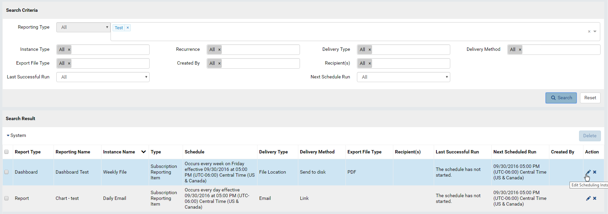

System Configuration/Scheduling¶
The System Configuration/Scheduling page allows user to:
- search for schedule instances
- view, edit and delete schedule instances
Search and View Schedule Instances¶
- In browser, log in to Izenda as a user with System Configuration permission.
- Click Settings, then System Configuration then Scheduling in the left menu.
- Select the Setting Level: either System or a specific tenant.
- The Search Criteria box is displayed on top.
- Select the Reporting Type: either Report, Dashboard or All from the drop-down, then enter a partial report/dashboard name to search for.
- Optionally select other criteria, then click the Search button.
- The matching schedules will be displayed in Search Result box.

{kind=link}
Fig. 127 Schedule Instances Search
Edit Schedule Instance¶
- Click the pencil icon in Action column to edit a schedule.
- The Edit Schedule pop-up is similar to Report Designer.
- Click the OK button to save the schedule.
Delete Schedule Instances¶
- Click the x icon in Action column to delete a schedule.
- To delete multiple schedules:
- Tick the check-boxes in front of each one.
- Click the now enabled Delete button at the top of the list.